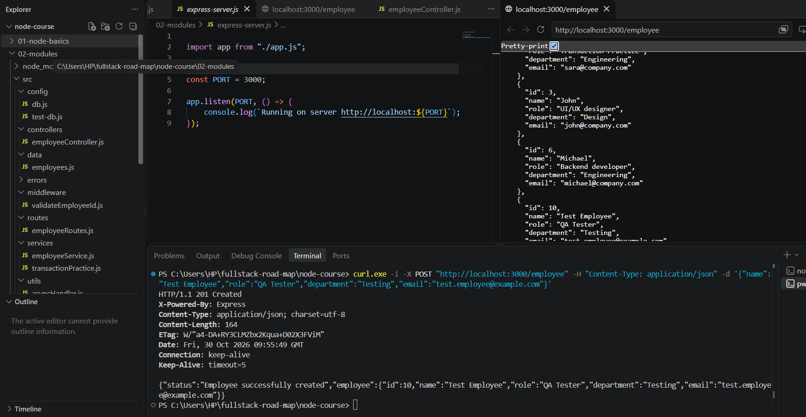
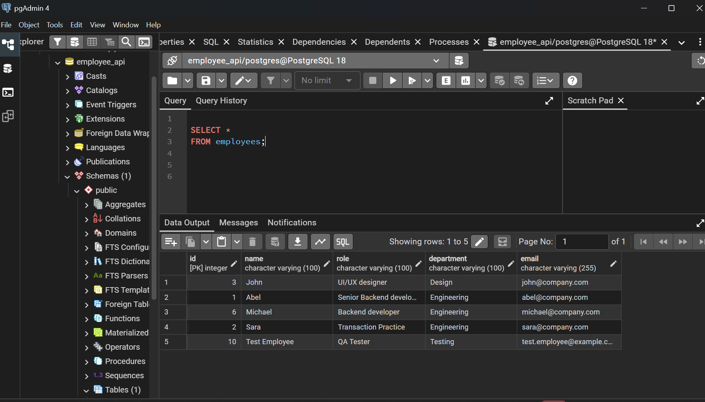

About Me
Hello! My name is Abel Gebregziabher. I am a
Software Engineering student with a strong interest in
backend development. I enjoy learning how applications
work behind the scenes, solving problems, and turning ideas into
practical software.
I am currently developing my skills in JavaScript,
Node.js, Express.js, and
PostgreSQL. I am especially interested in building
reliable APIs, working with databases, and understanding how
complete web applications communicate.
My goal is to become a skilled backend developer and
continue growing through practical projects, consistent practice,
and learning industry-standard development techniques.
What Inspires Me
"The secret of getting ahead is getting started." — Mark Twain
One principle I try to follow is practice makes progress
.
I believe that becoming a better developer requires curiosity,
patience, and the willingness to learn from mistakes.
Skills
Programming and Web Development
- Programming Languages
- Backend Development
- Node.js
- Express.js
- REST API fundamentals
- Database
- PostgreSQL
- SQL fundamentals
- Frontend Fundamentals
- HTML
- CSS — learning
- JavaScript — continuing to develop
My Learning Roadmap
- Strengthen HTML and CSS fundamentals.
- Improve JavaScript programming skills.
- Build backend applications with Node.js and Express.js.
- Develop database skills with PostgreSQL.
- Build complete APIs with validation and error handling.
- Learn automated testing and deployment.
- Build and publish larger full-stack projects.
Tools I Use
- Visual Studio Code
- My code editor for writing and managing programming projects.
- Node.js
- A JavaScript runtime I use to build backend applications.
- PostgreSQL
- A relational database system I use to learn SQL and manage application data.
- Git and GitHub
- Tools for tracking code changes and sharing projects.
- Chrome DevTools
- A browser tool for inspecting and debugging web pages.
Projects
Employee Management API

A backend learning project built with Node.js and Express.js.
It provides API endpoints for working with employee records,
including creating, viewing, updating, and deleting employees.
Technologies: JavaScript, Node.js, Express.js
PostgreSQL Employee Database

A database practice project involving employee records,
SQL queries, filtering, sorting, pagination, updates, and
database transactions.
Technologies: PostgreSQL, SQL
See project details on my projects page.
Education
Software Engineering
Institution: [Add your university or college]
Study period: [Add your starting year – present]
Academic Record
Replace the sample rows below with your actual courses and grades.
Academic Record
| Year |
Course |
Credit Hours |
Grade |
| Year 1 - Semester I |
Fundamentals of Programming I |
4 |
A+ |
| Year 1 - Semester I |
Introduction to Programming |
3 |
A |
| Year 1 - Semester I |
Discrete Mathematics |
3 |
A |
| Year 1 - Semester I |
Probability and Statistics |
3 |
A+ |
| Year 1 - Semester II |
Database |
4 |
A+ |
| Year 1 - Semester II |
Data Communication |
3 |
A |
| Year 1 - Semester II |
Fundamentals of Programming II |
4 |
A |
| Year 2 - Semester I |
Internet Programming |
4 |
A+ |
| Year 2 - Semester I |
Object-Oriented Programming |
4 |
A |
| Year 2 - Semester I |
Data Structures and Algorithms |
4 |
A |